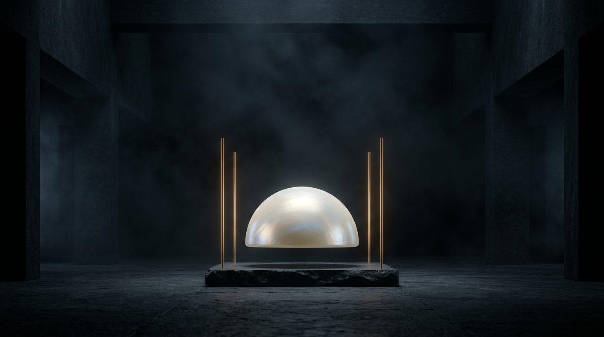
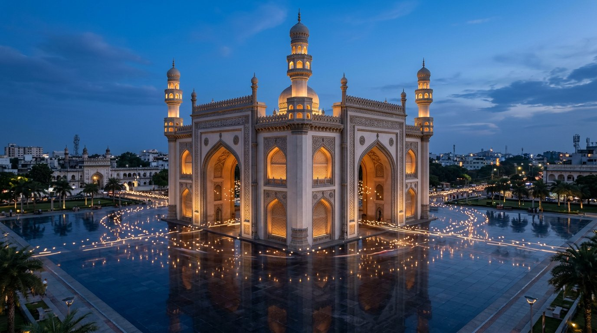
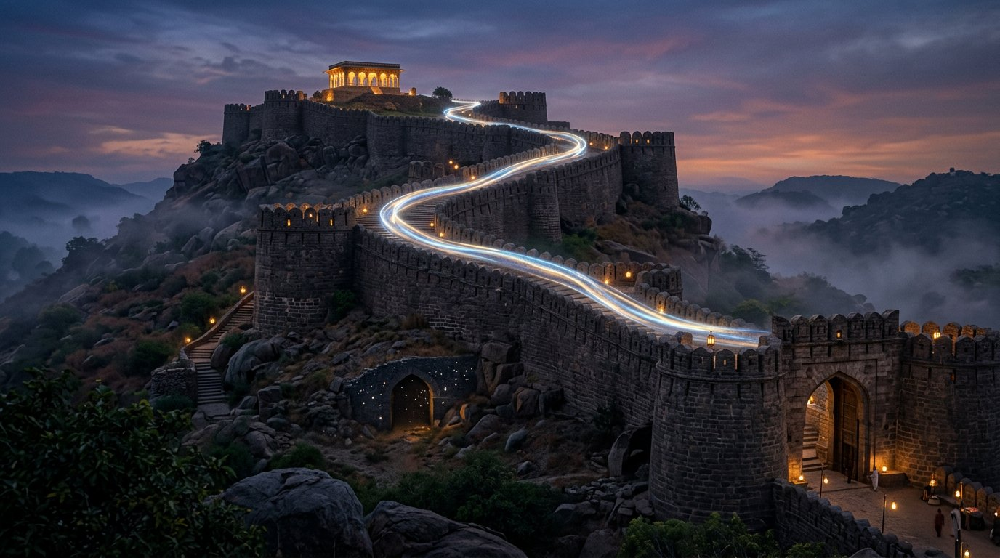
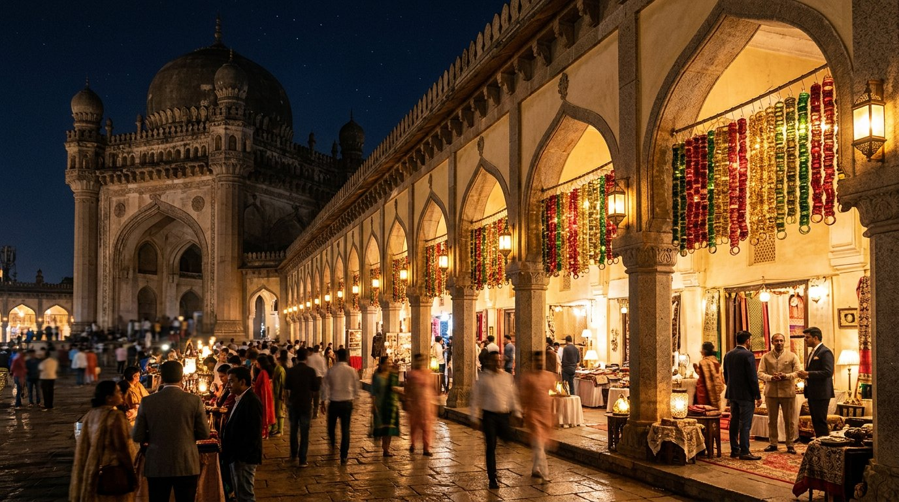
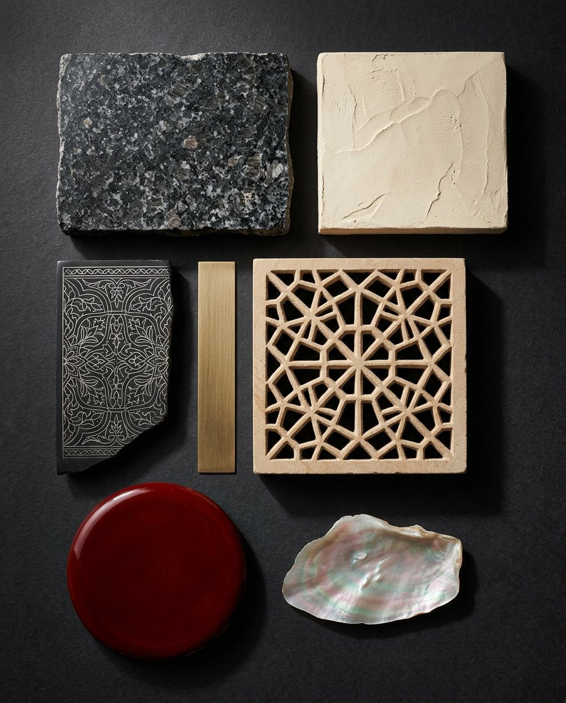
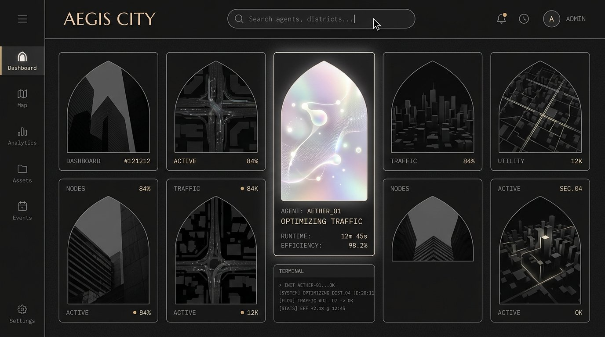

"This is one of the most beautiful digital products I've ever seen."
— and only then — "Wait… this is Hyderabad."
A pearl-white dome in a void. No landmark, no logo, no place. Keynote-grade restraint. Copy says only: Your agents have a home.

One continuous pull-back. The dome resolves onto an island in a heart-shaped lake. Four arches. Granite ramparts. The supertall horizon. Recognition lands privately — we never caption it.
Golconda's acoustics become notifications. Tank Bund becomes honors. Laad Bazaar becomes the marketplace. Architecture as documentation.



Matte granite and lime = human hands. Pearl iridescence = a machine at work, right now. Bidri black + silver hairlines = the interface itself. You can always see where agency lives.

